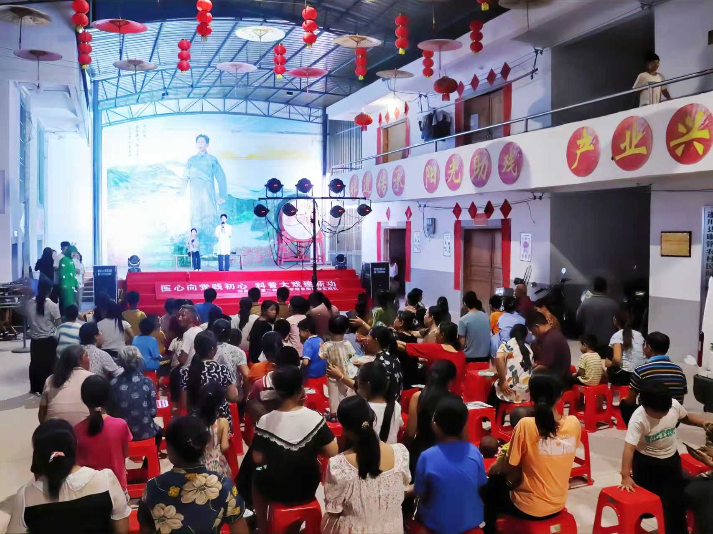
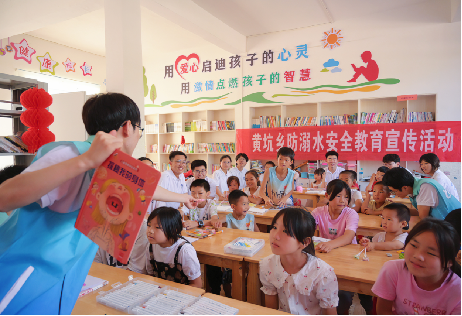
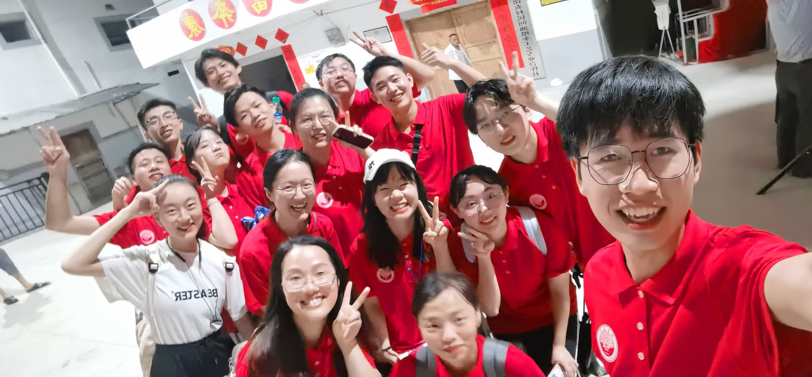

埋下种子：一个孩子的从医梦
故事的起点，源于一张泛黄的老照片，和一个孩子心中最纯粹的梦想。创始人从小就对生命充满敬畏之心，也亲身体验过生命不在自己手上的痛苦感觉。立志用医学知识去帮助他人。这份初心，如同白马上驰骋的少年，无畏而坚定，成为了日后创立「智瘤方舟」最深沉、最温暖的动力源泉。
这份源自童年的梦想，穿越时光，最终凝聚成一个坚定的信念：要让复杂的医学知识，变得有温度，易于理解，真正走进每一个需要帮助的人心里。
薪火承梦：步履不停的科普之路
我们相信，力量蕴藏于每一次微小的行动中。从城市到乡村，从线上到线下，我们用脚步丈量科普的宽度，用真诚拓展关怀的深度




跨界赋能：“医工媒”黄金三角
我们深知，单靠一种力量无法跨越巨大的信息鸿沟。因此，「智瘤方舟」汇聚了临床医学、前沿工程技术AI与创意媒体传播的跨界人才，形成了独特的创新“力量”源泉。
